CanDo: Introduction and Setup¶
Background¶
CanDo helps a school manage what is often called outcome-based assessment. It is also called competency, skill or standard based assessment. The basic principal is the same. You have a body of outcomes, which we will generically call “Skills” in the rest of this document, and you track student achievement of those Skills directly, rather than through assigning points to activities or participation and assigning an aggregate grade.
Note: CanDo was developed in collaboration with the Arlington Career Center (of the Arlington (Virginia, USA) Public Schools and Virginia Career and Technical Education Resource Center. CTE users in Virginia should refer to the VA CTE site for specific documentation concerning your competencies and other details.
Getting to a specific example as quickly as possible will help.
Below is a mindmap showing the hierarchy of “Hands-On Math” Skills covered in the Building to Teach program (click on image to expand).
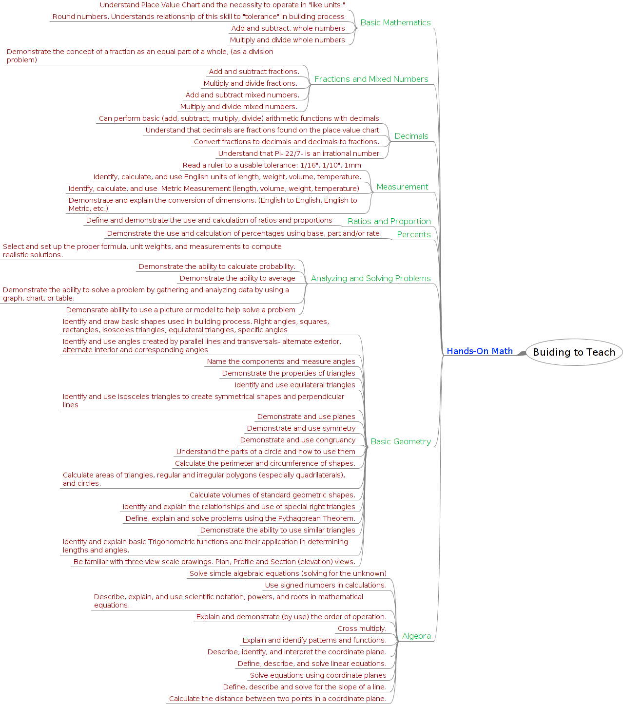
Each leaf in this tree is a “Skill,” for example:
Understand Place Value Chart and the necessity to operate in “like units.”
Round numbers. Understands relationship of this skill to “tolerance” in building process.
Add and subtract, whole numbers.
These are grouped in branches called “Skill Sets,” e.g.:
Basic Mathematics
Fractions and Mixed Numbers
Decimals
The trunk of the tree is a node representing the Hands-On Math course, for clarity, we will refer to this as a “Cluster.” This is the only Cluster in the program (for this demo, at least).
The root node is the entire Building to Teach program.
CanDo requires skills be organized into Skill Sets, although “Skill” and “Skill Set” can be renamed to map to local terminology.
The organizing nodes above this level are optional. In this case we just have “Cluster.”
Organizing your Skills to Work with CanDo¶
There are a few things to keep in mind in considering how to organize your skills for use in CanDo.
In CanDo, “Skills” are the things that are directly evaluated. Teachers can score a Skill, not a Skill Set or anything else above that in the hierarchy. Reports could generate aggregate scores based on the Skill scores.
If you had a local system where you had, say, “standards” and “criteria” where “criteria” were the things that teachers actually scored, then you would map “standard” (in your system) to “Skill Set” and “criteria” to “Skill.”
A second consideration is that the CanDo gradebook is organized like a spreadsheet with a set of worksheets. In a given section, each Skill Set corresponds to a worksheet. From the user’s point of view, it is best if each worksheet, and thus Skill Set, has 8 - 10 skills, to minimize the amount of time the teacher spends switching between sheets or scrolling from side to side within a worksheet, so you may want to either combine your groups of Skills or split them up if they tend to be much smaller or larger than 8 - 10.
Finally, a little planning is necessary if you want to automatically map your skills to courses. We will cover exactly how this works later, but you need to match one attribute of the courses (title, description, course ID, alternate ID) with an attribute of the “node” in your skills hierarchy (title, description, label).
In our example, we have a “Cluster” layer, and the single Cluster in the skills hierarchy has the title “B2T Hands-On Math.” If there was also a Course in SchoolTool that had the same title (or a match in another attribute), they could be automatically matched.
Entering Skills and Skill Sets Through the Web¶
Logged in as “manager,” go to School and click Skills from the sidebar:
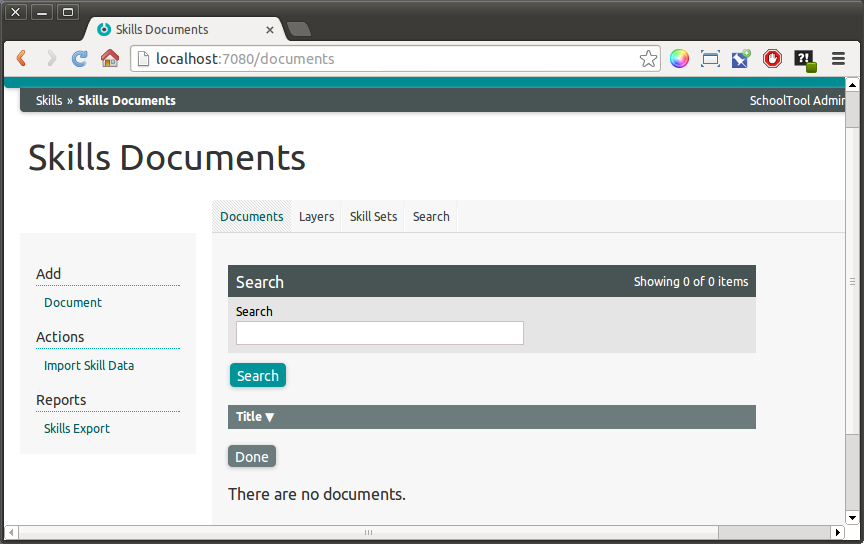
We’ll start with a document representing the Building to Teach program. Click Add: Document:
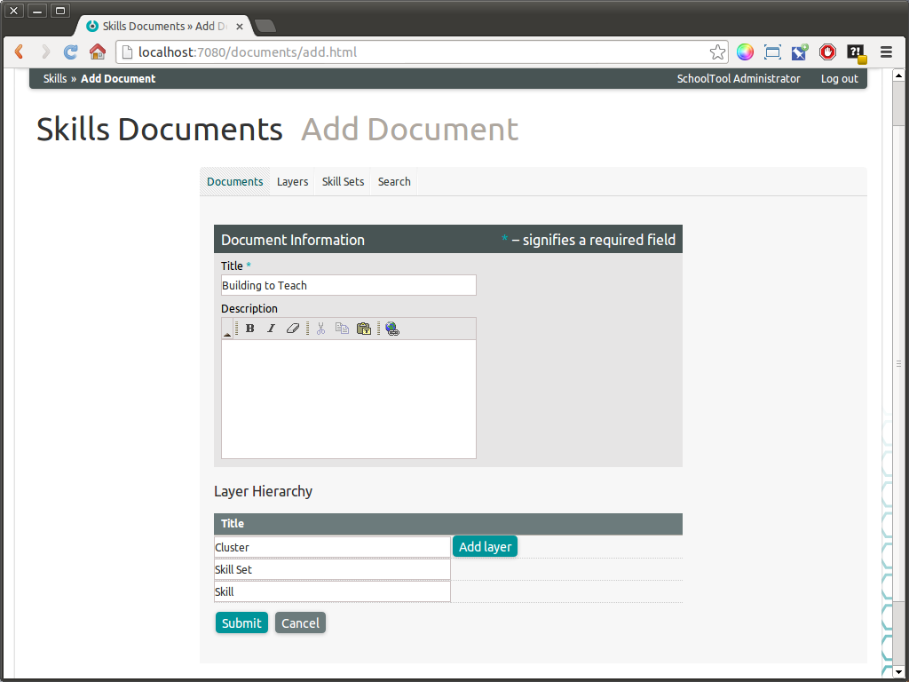
Give the document a title and an optional description. Under Layer Hierarchy, in this case, as defined above, we have “Cluster,” “Skill Set” and “Skill”. Click on Add layer and add “Cluster” above “Skill Set.” We could also rename “Skill Set” and “Skill” to suit the names used in our particular document (e.g., “strand” and “standard”).
Click Submit:
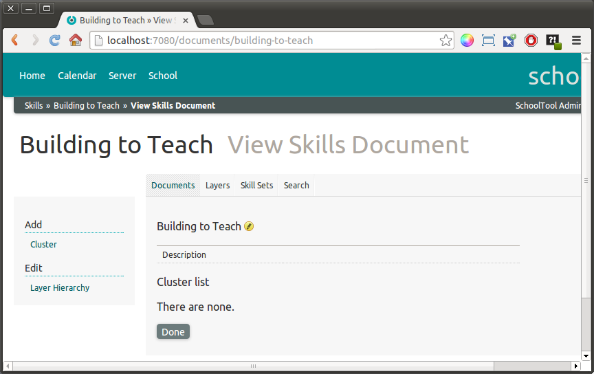
To add a Cluster, click Add: Cluster:
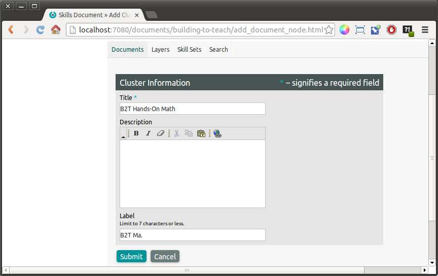
Click Submit:
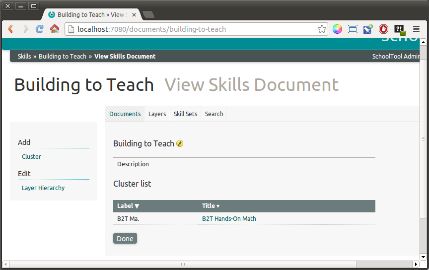
Since we are done entering Clusters, to add the Skill Sets to Hands On Math click that link in the Cluster list:
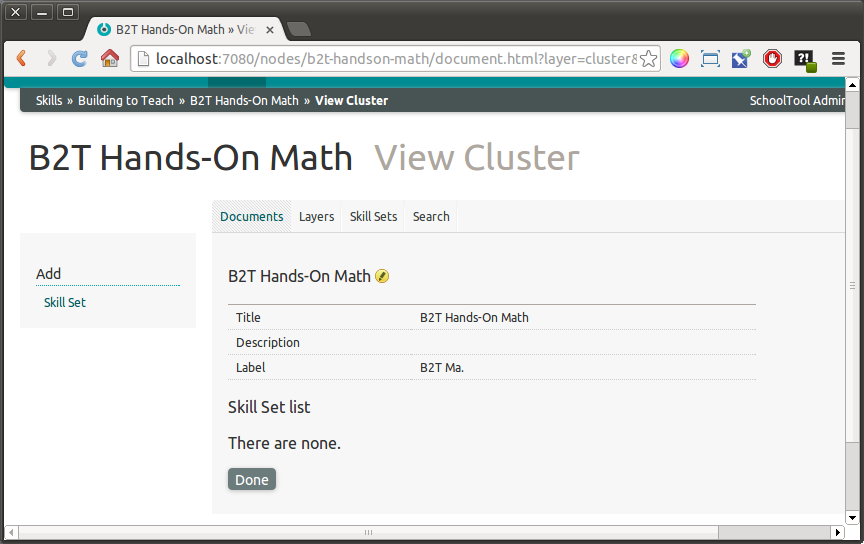
To add a Skill Set click Add: Skill Set:
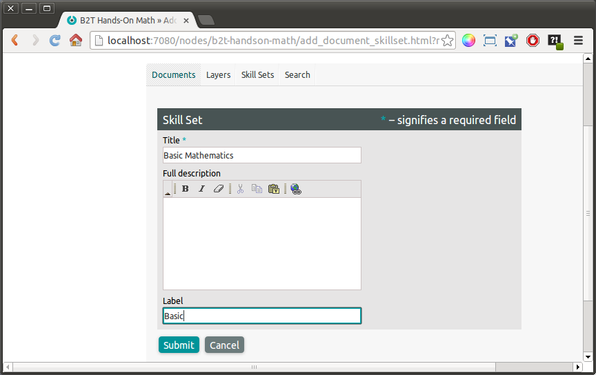
The label attribute is important because you need a short representation of the Skill Set that will appear within a tab in the CanDo gradebook.
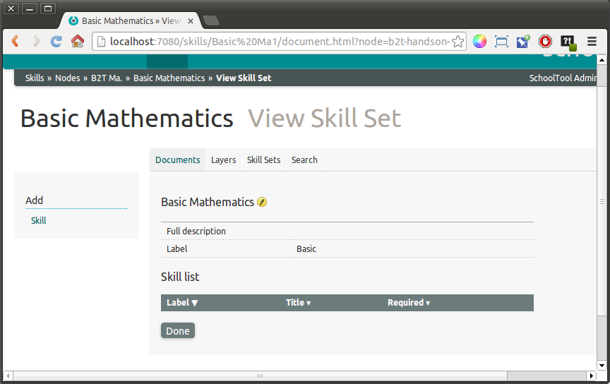
Similarly, to add a Skill to the Skill Set, click Add: Skill from the Skill Set view:
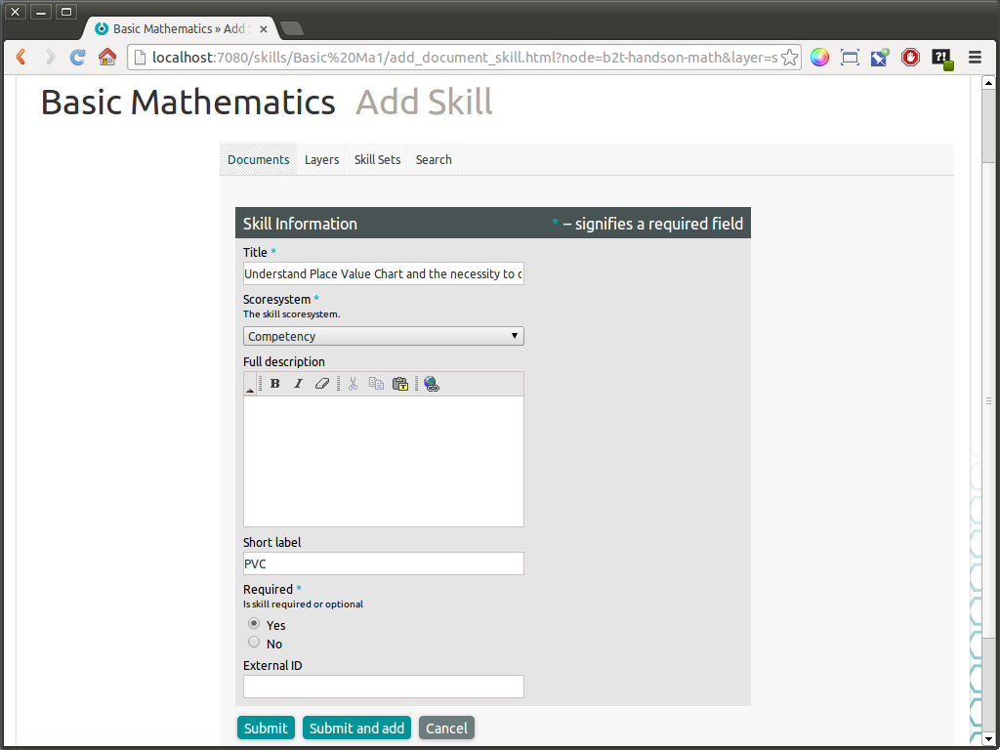
Each skill is assigned a score system, that is, the grading scale on which students will be evaluated on this skill. For example, the default score system for CanDo is “Competency:”
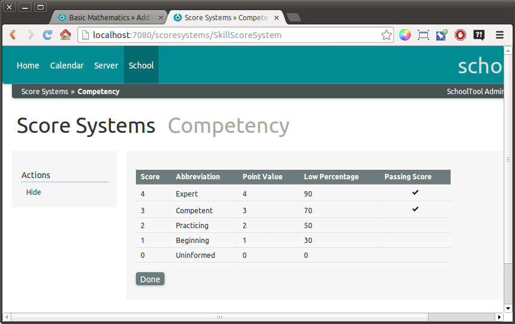
As you add more skills, the form will use your previous score system selection as the default. In practice, a given set of skills will usually use one score system, but if you are including different types of skills (academic, technical, social, etc) within your system, they may require different score systems as well.
See the main Score Systems page for more about creating a custom Score System. Note that it is much easier to enter scores in CanDo if the Score System labels or titles are single characters.
A meaningful label is particularly important for skills as it will be what the teacher sees at the top of the column in their gradebook view.
The Required selection has an impact on various reports. If in doubt, choose Yes.
Use the External ID field if the skill has a particular identifier used by the standards-making body.
Click Submit and Add if you want to go directly to creating the next skill.
Otherwise, Submit results in:
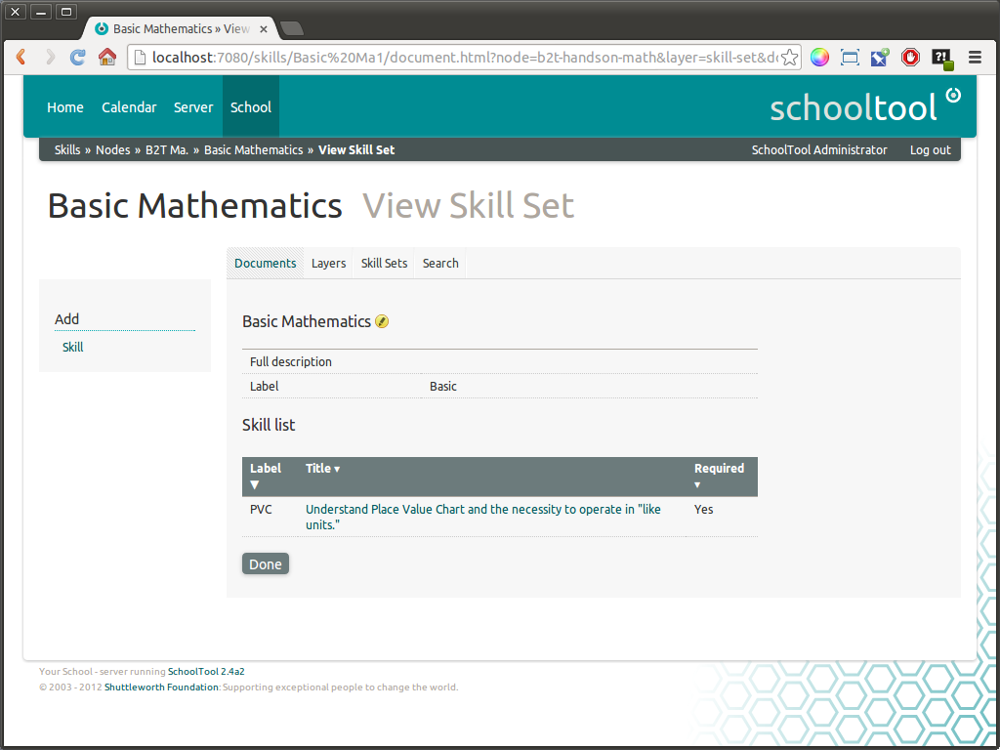
Clicking Done takes you back up to the containing Skill Set and up through subsequent layers.
This outlines the basic procedure for manually creating a skills document. There will necessarily be a lot of repetition in manually entering all the Skill Sets, skills, and other required layers of hierarchy. If you have a large set of standards of standards, and you have them in machine-readable form, such as csv tables, a spreadsheet, or XML, you will probably want to import them in bulk, which we will explain in the next page. However, the easiest way to start the process, even if you want to import, is to follow the above procedure for at least one skill as shown above.